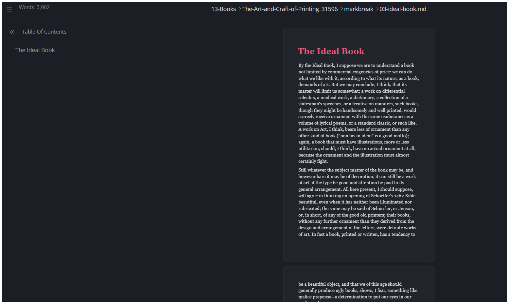

MarkBreak
Writing from start to printed.
Set the role. Mark the break. See the spread while you draft — Desktop that ships what the dialect promises.

MarkBreak
Set the role. Mark the break. See the spread while you draft — Desktop that ships what the dialect promises.
Real-time WYSIWYG with the manuscript open on disk. Source mode when you want the marks naked. No account. Plain files.
role: chapter stays visible in the front matter — the print job starts in the YAML, not in a sidebar checkbox.

iA talks about book-like preview. We ship folio Pages and facing Spreads in the Desktop window, so the turn is something you can check before export.

One role per leaf. //break advances the story; //break page forces a turn; odd and even when the side must be specific. Tables that calculate — Markdown or CSV. The open rules live on markbreak.com.
Highlight the line you are in. Fade the rest. Typewriter pacing when you want the page to follow the caret — the quiet tools MarkText and iA writers expect, beside the print dialect they do not ship.

Windows, macOS, Linux. Open a blank page and write the first line of your book — the path stays clear to Docx and print.